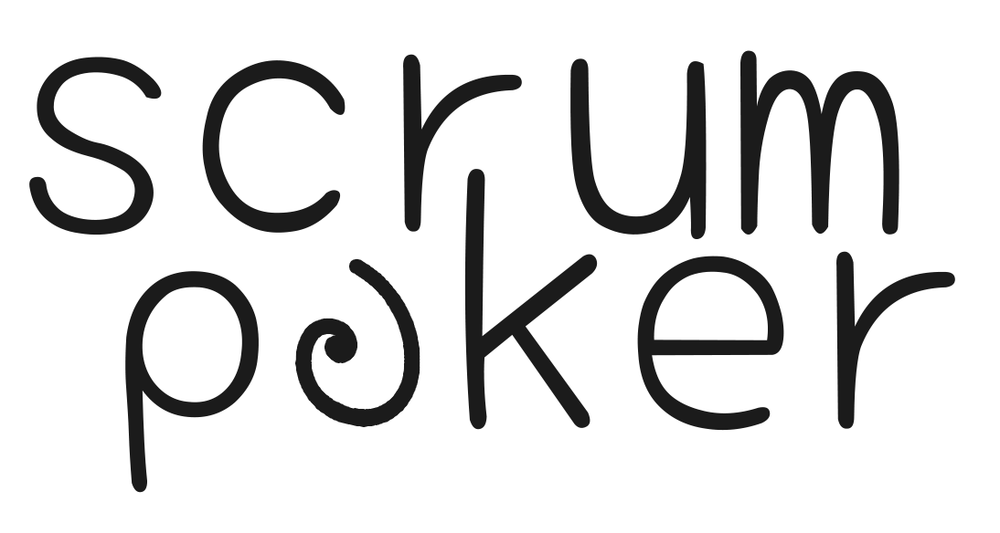

<div class="page-container">
  <app-dashboard-background style="z-index: -1;"></app-dashboard-background>
  <div class="main-container">
    <div>
      <app-header></app-header>
    </div>
    
    <div class="input-container">
      <b class="instruction">{{'dashboard.sessionid' | translate}}</b>
      <div class="form-container">
        <mat-form-field class="example-form-field" appearance="outline" [formGroup]="logInForm" (keyup.enter)="goSession()">
          <input class="sessionID" matInput type="text" formControlName="pin" onclick="value=''">
          <button class="icon-buttons" matSuffix mat-icon-button aria-label="Clear" (click)="clearInput('pin')" [ngStyle]="this.logInForm.get('pin')?.value ? {'opacity':'100%'}:{'opacity':'0%'}">
            <mat-icon>close</mat-icon>
          </button>
          <button class="icon-buttons" matSuffix mat-icon-button aria-label="Log" (click)="goSession()" [ngStyle]="this.logInForm.get('pin')?.value ? {'opacity':'100%'}:{'opacity':'0%'}">
            <mat-icon>done</mat-icon>
          </button>
        </mat-form-field>
      </div>
    </div>
    <div class="seperator">
      <p>||</p>
    </div>
    <div class="create-session">
      <div class="button-row">
        <button mat-button class="button" mat-raised-button (click)="openDialogCustom()">
          {{'dashboard.createsession' | translate}}
        </button>
      </div>
    </div>
    <div class="create-session" *ngIf="jira_logged_in">
      <div class="button-row">
        <button mat-button class="button" mat-raised-button (click)="openDialogJira()">{{'dashboard.createsession_jira_session' | translate}}</button>
      </div>
    </div>
  </div>
  <div class="connect-jira">
    <div class="button-row" *ngIf="!jira_logged_in">
      <button mat-button class="connect-jira-button" mat-raised-button (click)="redirectToJira()">{{'dashboard.createsession_jira_connect' | translate}}</button>
    </div>
    <div class="button-row" *ngIf="jira_logged_in">
      <button mat-button class="connect-jira-button" mat-raised-button (click)="disconnectJira()">{{'dashboard.createsession_jira_disconnect' | translate}}</button>
    </div>
  </div>
</div>